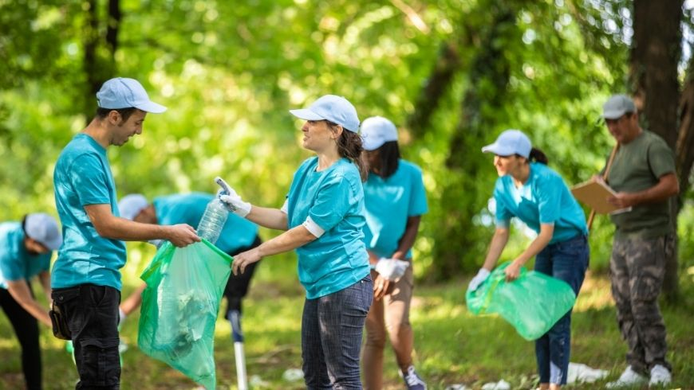
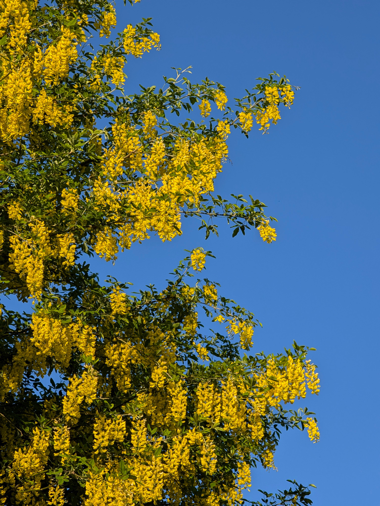
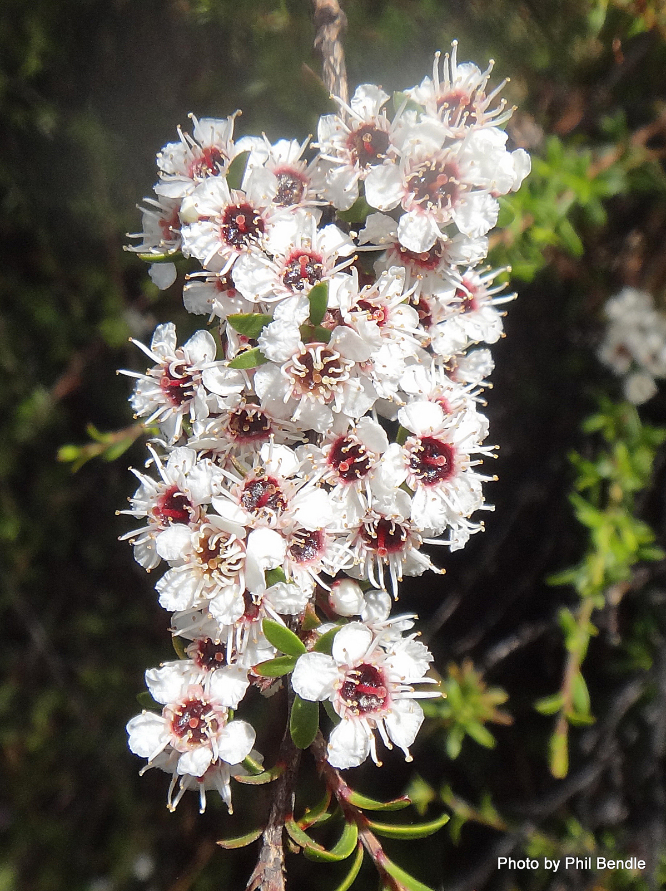

Our Initiatives
Plantly is not just about reading. Here is what we are doing on the ground, and how you can join in.

Torbay Native Planting Project
This year Plantly is getting involved with a local planting push along the Torbay coastline. The plan is to restore the stretch of reserve behind the beach with natives like harakeke, pōhutukawa and tī kōuka, helping to stop erosion on the banks and bring more tūī and korimako into the area.
We're running weekend planting days through winter, when the soil is damp and plants settle in best. No experience needed. We'll show you how to plant, mulch and stake each one.
Get Involved
Backyard Bird Corridor
We're encouraging households across Auckland's North Shore to plant at least one nectar or berry plant, like kōwhai or harakeke, in their own garden. The goal is a chain of small habitats that gives tūī and korimako safe stopping points as they move between larger reserves.
Sign up and we'll send you a free native seedling to get started.
Sign Up
Clean Tracks, Healthy Kauri
Kauri dieback spreads through soil carried on shoes and gear. Plantly volunteers help keep cleaning stations stocked and signposted on local bush tracks, and run short talks for school groups on why cleaning your shoes matters.
No planting experience needed, just a free weekend morning.
Join A SessionLatest Posts
Shorter reads on plant care, local news, and ways to help native plants thrive.
The Best Time To Plant Natives
Autumn and winter are the best times to plant in most parts of New Zealand. The soil is still warm, and regular rain does most of the watering for you. That gives the roots time to settle in before their first summer. If you live somewhere with hard frosts, wait until spring.
Protect Kauri: Clean Your Shoes
Kauri dieback is a disease that spreads in soil and can kill kauri trees. Soil stuck to your shoes can carry it into the forest. Clean your shoes before and after a walk, use the cleaning stations on tracks, and stay on the marked path so you do not walk on kauri roots.
Plants That Feed Native Birds
Kowhai and harakeke flowers are full of nectar, which tui and korimako (bellbirds) love. Planting them in your garden gives the birds a place to feed and brings them closer to your home.